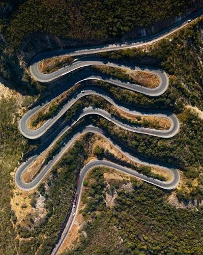

Capital
Lubango

Lubango
78.897 km²
Olunyaneka, Umbundu e Português
A Huíla é uma das províncias mais conhecidas de Angola, destacando-se pelas suas paisagens naturais impressionantes, clima ameno e forte tradição agropecuária. É também um dos principais destinos turísticos do país.